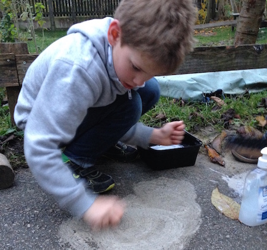

Der Schwerpunkt liegt beim Stimulieren der Basissinne ( Haut, Gleichgewicht, Knochen und Muskeln) sie
sind die Grundlage jeder Wahrnehmung. Weiters gehen die Kinder in Entwicklungsstufen zurück die
noch nicht optimal abgeschlossen sind. Die Kinder holen sich ihren Bedarf an Reizen selbständig
durch verschiedene Materialien: unterschiedliche Schaukeln, Sandsäcke ,Creme, Matten,
Schlauch - Tunnel zum durch Krabbeln, Gebärmutterhöhle, ... Die Kinder erfahren sich ihre Reize
auch in der Natur zu holen (Sandkiste mit Lehmsand, Bäume zum klettern, Bachwanderungen, …).
So wird dem Kind eine Fülle an Sinneserfahrungen ermöglicht, die sie bei den begleitenden
Reizverarbeitungspausen sinnvoll miteinander zu verknüpfen lernen.

Die SI – Begleitungseinheit ist dem individuellen Entwicklungsstand angepasst und richtet sich
nach den Bedürfnissen des Kindes. Eine Einheit dauert 60 Minuten. Um den sozialen Bereich
zu stärken sind je nach Bedürfnissen des Kindes zwischen 1 und max. 4 Kinder anwesend. Vor der ersten
Sensorischen Integrationseinheit findet ein kennenlernen des Kindes mit beiden Elternteilen statt.
Anschließend werden wichtige Punkte und Vorgangsweisen nur mit den Eltern ohne Anwesenheit des Kindes
besprochen. Diese erste Begutachtung teilt sich folgendermaßen auf: 30 Minuten Beobachtung des Kindes
mit mindestens einem Elternteil anschließend 60 Minuten Entwicklungsgespräch ohne Kind und mit den Eltern.
Der weitere Kontakt mit den Eltern ist in der gesamten SI – Begleitung ein wichtiger Teil.
Beratungsgespräche für Hilfestellung im Alltag können in Anspruch genommen werden.